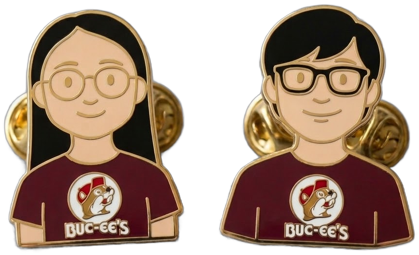

相識影片
▶ 播放
◀︎
▶︎
模式：自動
總長
跟配樂一樣長
2.5 分鐘
3 分鐘
3.5 分鐘
4 分鐘
5 分鐘
手動
⏱ 0:00 / 3:00
速度
慢
1×
1.5×
快
停留
短
中
長
配樂
底圖
Liberty
淺色簡潔
明亮彩色
OSM 標準
衛星
清除軌跡
總覽
隱藏
?
快速鍵
空白鍵 播放/暫停 · ← → 上一章/下一章 · M 自動/手動 · A 配樂開/關
H 隱藏/顯示控制列 · K 隱藏/顯示字卡與字幕 · C 清除軌跡 · O 總覽 · B 切換底圖
[ ] 縮小/放大圖釘 · - = 縮小/放大照片卡 · Esc 關閉照片卡
手動模式：按住左鍵拖曳＝畫軌跡 · 按住 ⌥ Option 拖曳＝移動地圖 · 滾輪＝縮放